Movember was initially a whimsical marketing campaign which encouraged men to grow moustaches to raise awareness for prostate cancer during the month of November. The campaign spread like wildfire and the charity is now responsible for raising $55.5 million (USD) annually through their mobile and web platforms.
While leading the design team at jtribe, a product development consultancy, we were tasked with Movember’s 2017 app design refresh for iOS. Our team’s primary responsibility was user research, conceptualising and prototyping product ideas, interactions and design direction. In addition to overseeing the design team and contributing to the app’s design, I liaised with key stakeholders, such as product owners, business analysts, researchers and engineers.
Fundraisers were churning alarmingly fast within the first few days of the campaign with a slight spike in activity towards the end.
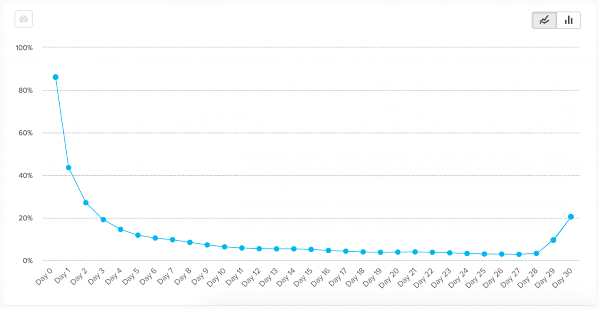
The combination of eager users willing to provide feedback and product owners focused on shipping quantity over quality meant that Movember's app became severely bloated with dozens of overwhelming features; it contained over 150+ pages. Although we couldn't prove this to be the cause of our user drop-off, we relied upon existing research on feature fatigue and behavioral theories such as the paradox of choice to highlight this as a key problem.
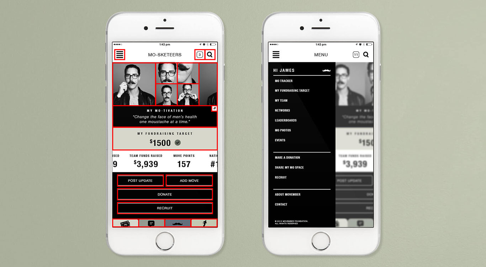
We started to define the app's success criteria by using the lean UX technique of experiment stories. These helped make sure we had measurable signals for our initial hypothesis, while serving as a great way to align the team on project goals from the onset. It was crucial to keep the descriptions open-ended so we didn't limit our potential solutions too early.
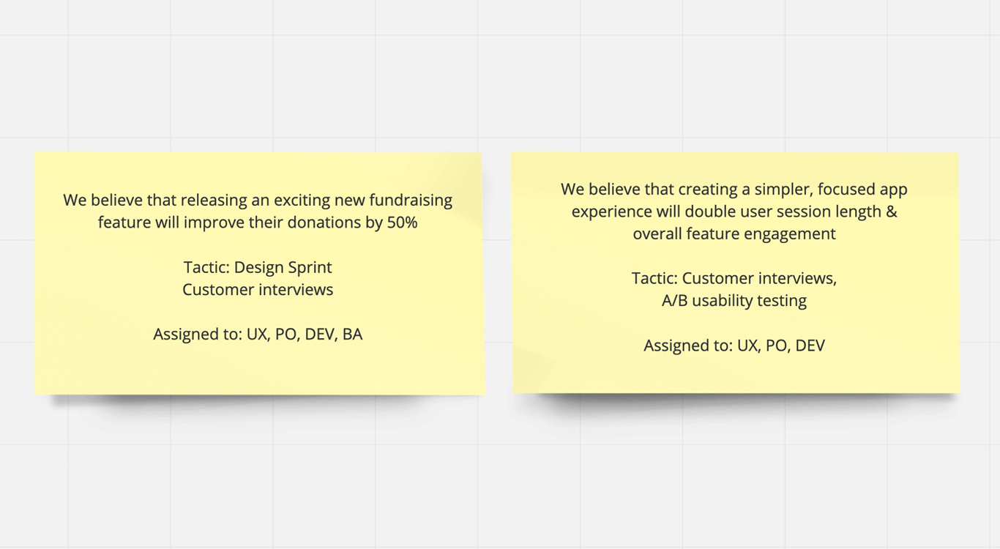
We were under immense pressure to move quickly as the immovable launch date was two months away, coinciding with the campaign start date of November 1st. In addition to being respectful of the campaign timeline, we had to accommodate the time associated with app store submissions, penetration testing and quality assurance. Due to the overall app development time constraints, I needed to finalize the app design experience within the first four weeks of the project starting.
The team was excited with our new shared understanding of the project goals, spurring them to create a wealth of ideas to help users become better fundraisers. Some stakeholders were attached to concepts which took years to make, while newer stakeholders seized the opportunity to validate their new ideas.
While the enthusiasm was great, we didn’t have time to get bogged down in group-think driven feature debates and technical feasbility sessions over solutions that hadn't been vetted.
To compress decision-making and to move quickly, I proposed a two-pronged design strategy that decoupled both experiment stories while giving them individual work streams.
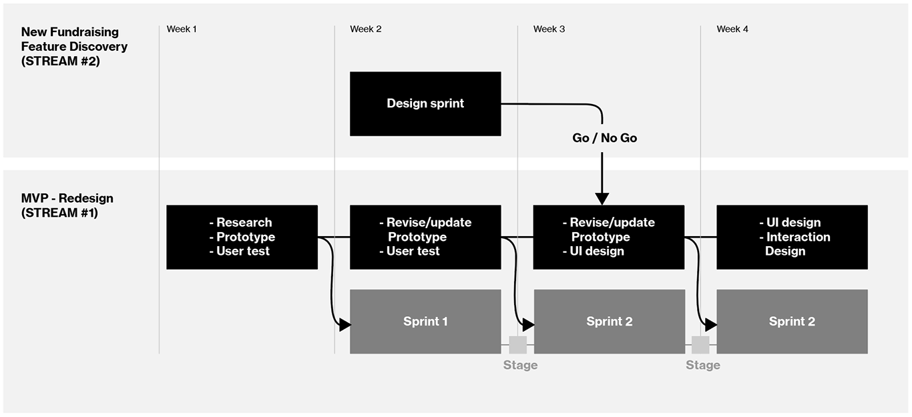
By doing this, if the "New Fundraising Feature" experiment stream failed, we were able to fall back on a decent MVP for launch.
We referred to Stephen Anderson’s UX hierarchy of needs to keep our MVP centered around features the users cared most about.
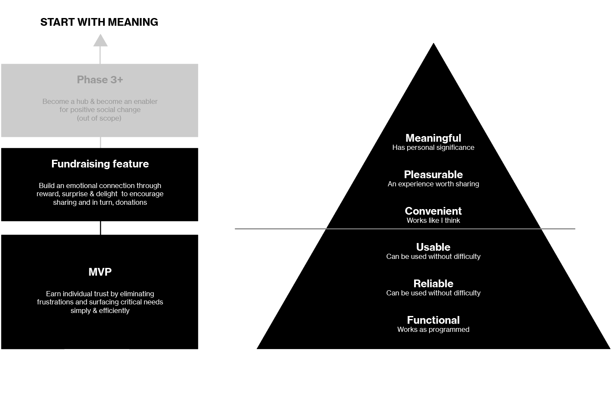
Movember’s analytics indicated a significant drop-off early in the product experience for fundraisers, but we didn’t know why. We conducted user interviews to better understand their experience while using the app.
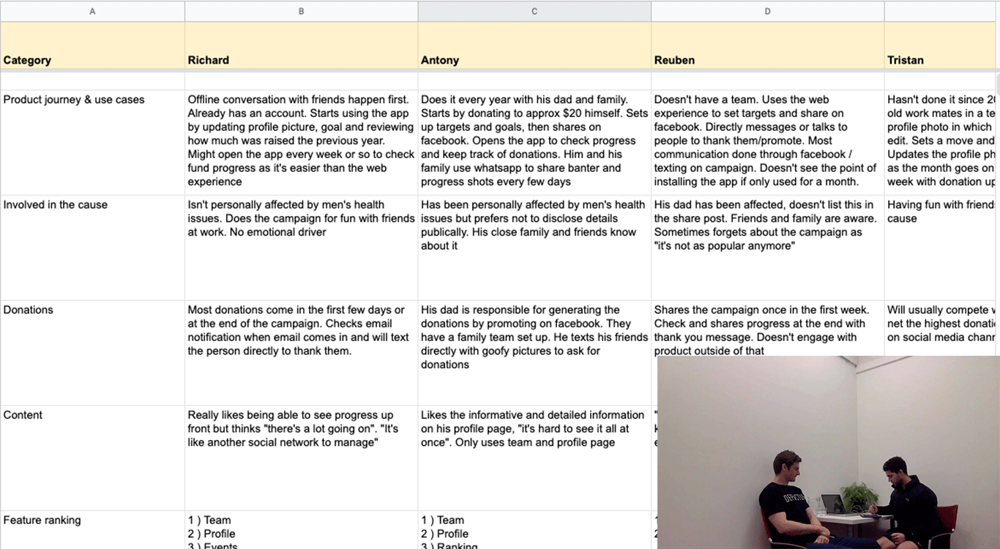
Movember had spent a lot of previous effort essentially building “another social network”. Overwhelmed, It was clear this direction had pushed users into using their preferred networks (Facebook, Whatsapp) to facilitate dialogue. This confirmed we were heading in the right direction in stripping back the app to its basics.
Behavioural patterns had emerged from our interviews and allowed us to segment different archetypes while uncovering new ones. These insights not only shaped our proto personas, but also helped us establish a framework for the behavioural variables that caused our audience to sit in different camps. These variables were categorized into frequency of app use and promotion effort.
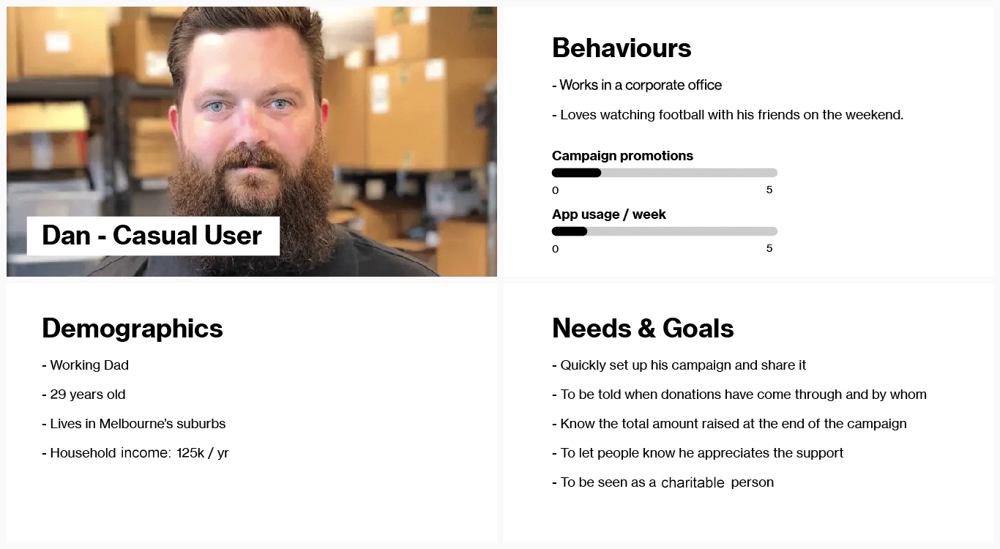
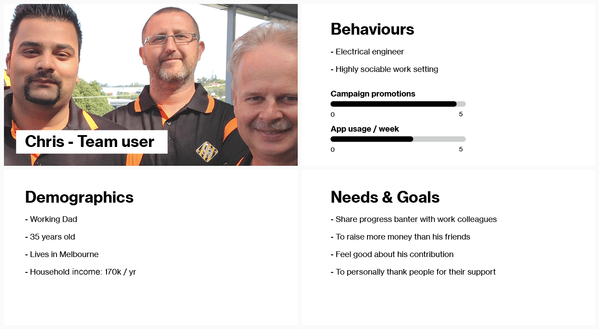
Circulating this from the onset helped us focus on what matters most to fundraisers and built empathy amongst the client and our team. It also helped prioritise our core audience and allowed us all to refine user needs as we learned more.
With the tight deadline looming, we opted for efficient user research techniques in order to build an understanding of the customers’ product experience. We leveraged our user interviews; App Store reviews; Localytics and looked to social media in order to gauge our users’ needs and pain points throughout Movember’s campaign month.
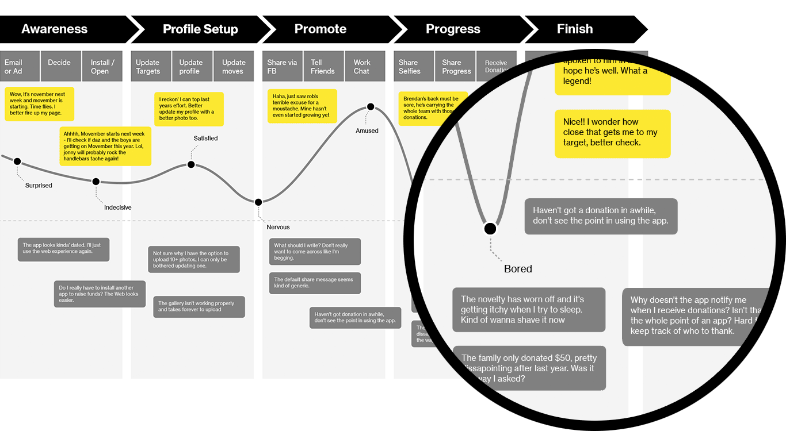
From this exercise we had a high-level understanding of how Movember users were moving through the product, but there were still gaps when examining the granular details of the app experience. To address this, I combed through existing research and used mental models to unpack users’ behaviors before, during and after Movember campaign; this gave the team a way to visualize what existing features were critical, what features could be discarded and what opportunities were ripe for innovation.
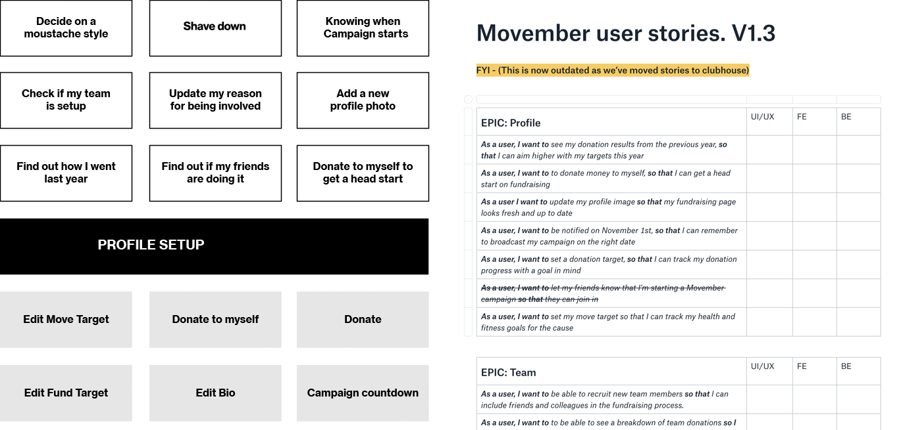
Working with the product owners and engineers, we were able to use mental models to influence the first cut of MVP user stories.
There's nothing more frustrating than feeling lost after a redesign, in fact, we've seen companies like Snapchat be serverely impacted by pulling the rug out from underneath existing users.
It was important for users to be instantly familiar with the app without the need for feature or structured onboarding. We used card sorting exercises to try out new ways of organizing content in a way our users could immediately understand.
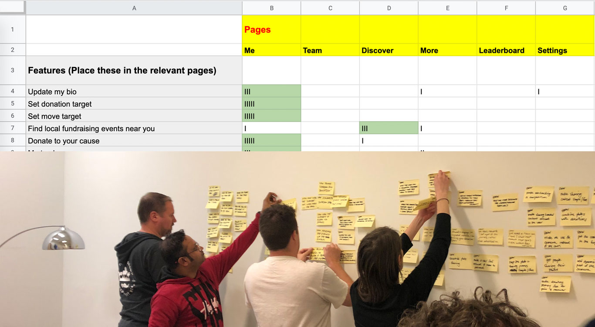
Movember had just refreshed their branding collateral for 2017’s campaign. I took the opportunity to work closely with their marketing team to create experience principles that would permeate throughout the app. These principles were used among the entire team to constantly drive the aesthetic, feel and overall tonal direction of the app.
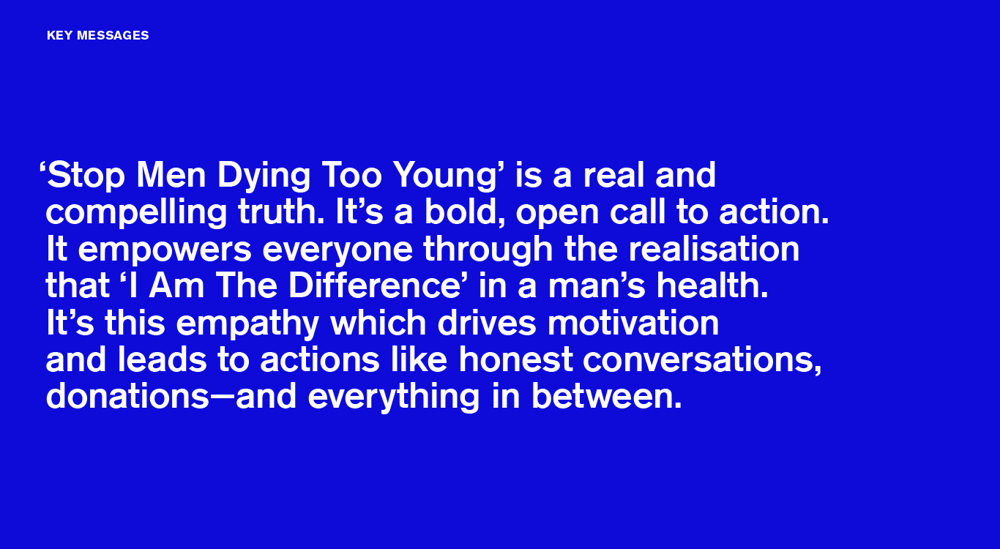
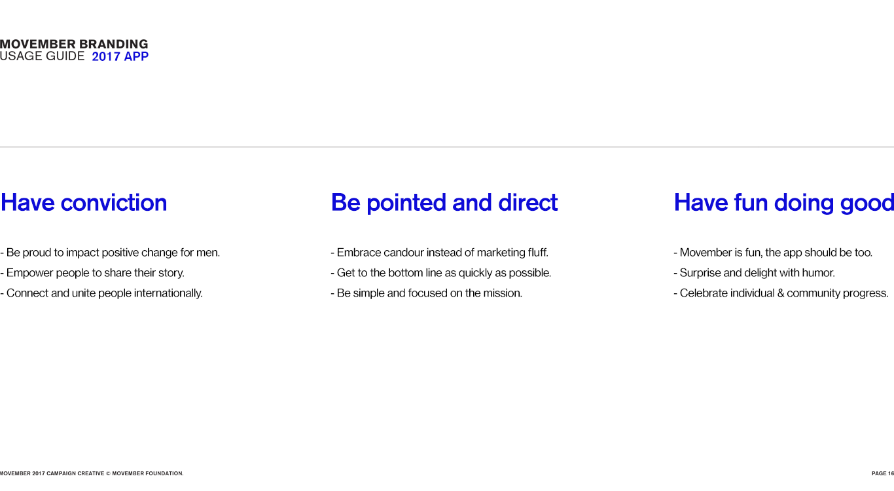
With a clear understanding of the pared back user needs and structural expectations, I began sketching stacks of different approaches for the underlying UX, considering functional and API constraints, arrangement of UI and interactive behaviours. Having quick, iterative feedback loops among the team started to transform the product’s vision into something tangible.
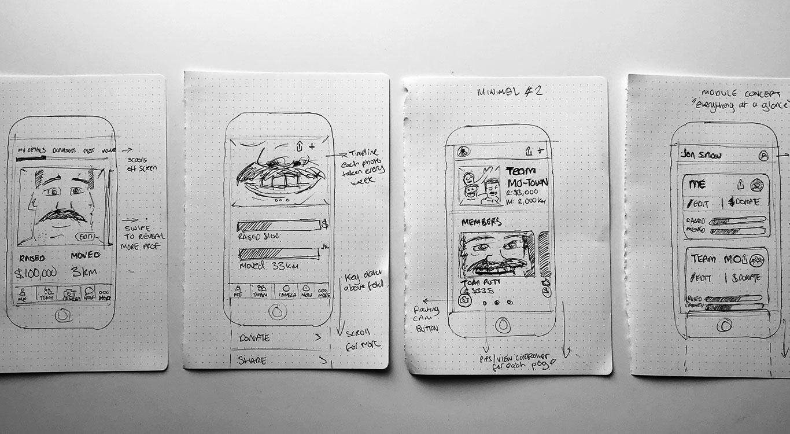
Using Sketch with Craft's plugin to prototype allowed me to dial-up the fidelity, explore and update a range of ideas at a breakneck speed. We eventually distilled the designs to two different directions for our users to weigh-in on.
Greyscale designs ensured we avoided subjective color conversations from derailing constructive team critiques.
We tested both concepts on sample size of 70 users internationally. In order for us to choose the best experience, we judged both versions on the time it took to complete core tasks as well as general preference.
Although 73% leaned towards the scrolled content experience (second option), people still felt excessive scrolling could be potentially tiring if there was too much content to manage on their page. We went back to the drawing board to try and fix this.
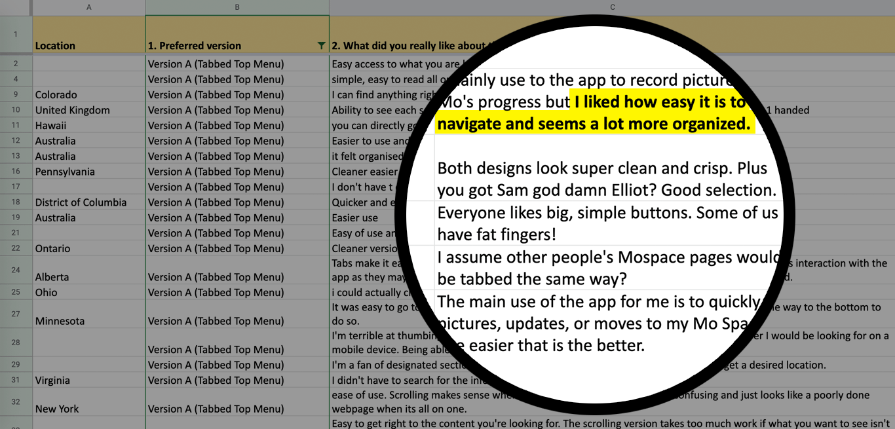
Despite mixed A/B results, users responded well to the overall redesign, navigating fluidly between features they cared about while discovering existing useful features that had previously gone unnoticed.
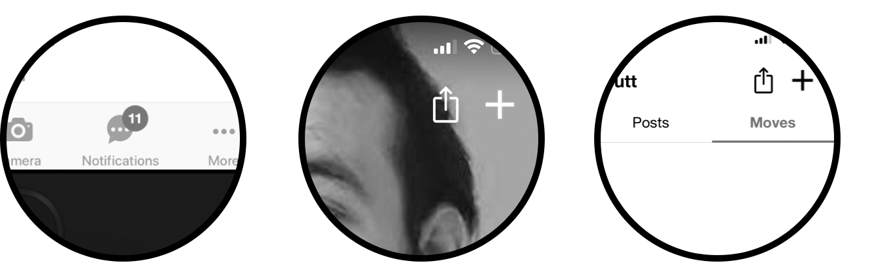
We removed in-app notifications as users couldn't be bothered managing them and generally preferred the combination of email and push notifications to keep them updated.
We made sharing and adding a post/move accessible anytime, anywhere from a fixed header as we had initially underestimated the importance of these call to actions.
We created a hybrid scrolling experience which combined tabbed content within a long form page to avoid scrolling fatigue which our users were concerned about.
Having addressed the core functionality of the MVP, we were able to turn our attention towards creating an innovative fundraising feature in which to improve user retention and increase donations.
Existing research in conjunction with a shared understanding of the problem meant that we could delve straight into the divergent and convergent phases of the design sprint. Our challenge was to help Movember users become better fundraisers.
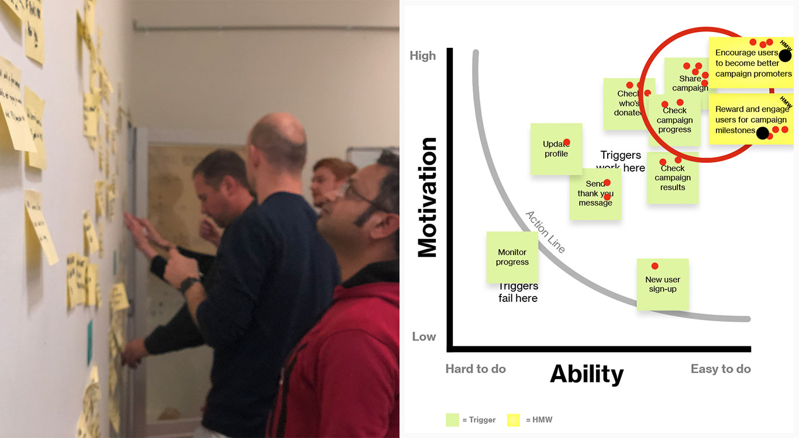
Instead of focusing our solutions on a chosen part of “the map” (as suggested by The Design Sprint Book), I proposed we use BJ Fogg’s behaviour model to vote on known psychological triggers to inform our solutions. By abstracting these touchpoints, our solutions could be better catered for non-linear customer journeys, such as people joining the cause later in the month. This strategy allowed us to fluidly conceptualize based on campaign moments.
After shortlisting and collating the winning triggers and How Might We’s, the team conceptualized and voted on a range of ideas to be prototyped.
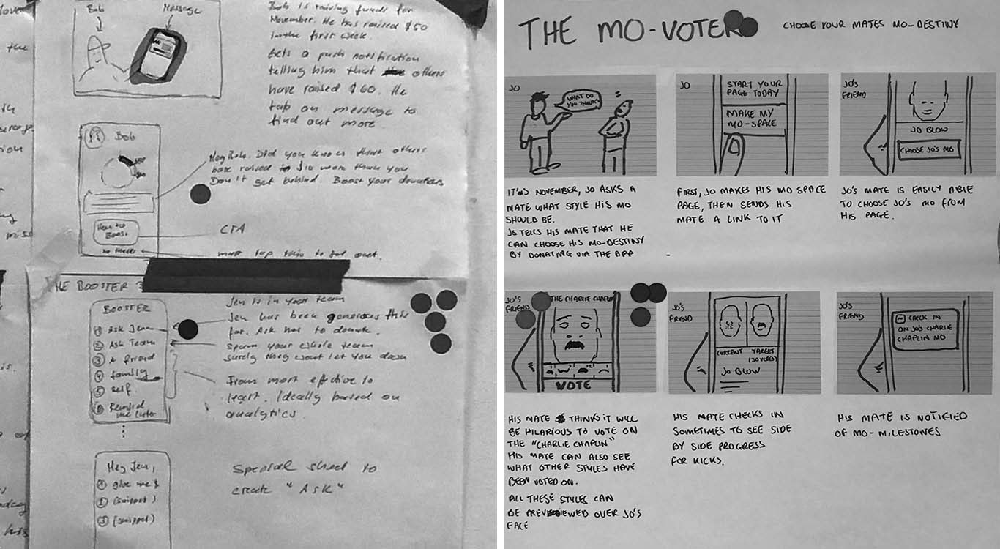
Chosen idea #1 — The Donation Booster: evidence demonstrated that people were generally bad at promoting their page. The “donation booster” concept aimed to solve this by suggesting practical ways in which to boost donations throughout the campaign, such as setting up share reminders or suggesting potential sponsors. We also incorporated gamification principles; completing these boosters would unlock tangible rewards along the way.
Chosen Idea #2 — The Mo-Voter: the idea I put forward took inspiration from our customer journey map by tapping into the initial offline comradery and excitement leading up to Movember. Using AR, it enabled fundraisers to take friends on the Movember journey by letting them vote and ultimately choose the fundraisers moustache style. This idea set out to increase peers’ emotional investment in the campaign, while motivating the fundraiser with extrinsic milestones.
The "donation booster” concept was chosen to be prototyped because it served as a better catalyst for testing a range of donation methods, rather than one. However, we also incorporated the AR camera concept to see if users found it engaging.
We used Sketch and Invision to prototype the flow while using Google’s vision API to quickly develop and simulate our rudimentary camera concept.
While the camera provided significant amusement among our testers, the donation booster concept wasn’t performing as we had hoped; people didn't see the need to be guided on becoming better page promoters. Overall, it had the opposite effect, often portrayed as a chore, rather than a delight.
We were blindsided by our assumption that users wanted to improve their fundraising abilities. After debriefing, we realized we were approaching the design sprint challenge inwardly — our solution to make our users better fundraisers was to retain, educate and delight them in the app. But what if we looked outward?
Our research had shown that fundraisers were exchanging campaign banter and selfies within their own group chats during the drop-off period. While discussing this insight, we started to ask ourselves — what if we tapped into these group chats by giving the fundraisers tools to create shareable content? Would the shareable content be engaging enough to share with their wider network? If so, would it drive donations?
A new direction started to formulate and we decided to use the well received camera concept as the catalyst for this new experiment.
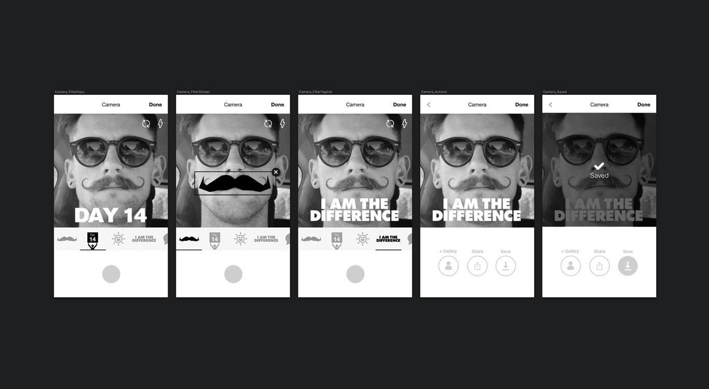
Development was well underway, but our launch date was rapidly approaching. We increased the cadence of design reviews with our engineering team to tackle effort concerns, sketch quick wins and ensure we re-used design patterns economically.
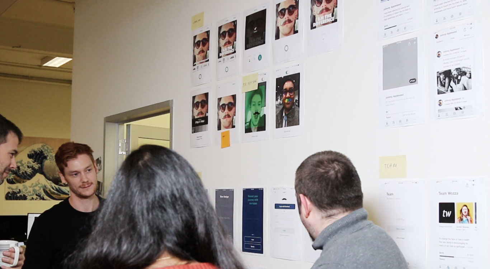
The clean and simple experience is designed to provide fundraising progress at a glance. Progress bars provided a positive feedback loop to encourage target completion. We employed fitt's law as a guiding principle to make sure critical actions were large and easy to reach.
We opted for clear, large and readable typography — choosing colors with high contrast to improve legibility.
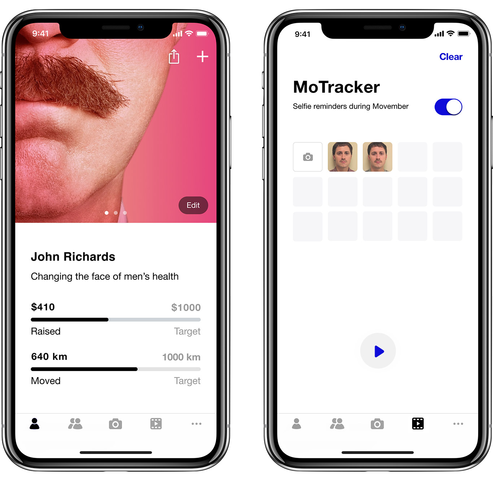
Majority of posted photos were moustache-centric. For this reason, the photos took up most of the visual weight to create both a personalised and branded experience. I contrasted this further with subtle and minimal supporting UI elements which had the additional benefit of emboldening calls-to-action.
Leveraging selected iOS patterns from Apple’s HIG made the experience familiar, while ensuring scalability for future releases.
I made sure the app’s design language was cohesive with the soon-to-be release iOS11 software update which proposed a bold new design direction for Apple’s ecosystem. As Apple hadn't updated their guidelines to include iOS11 compatibility, I downloaded their beta to research their new design principles in detail.
This foresight resulted in the current app feeling up-to-date at the time of writing this (almost 2 years later).
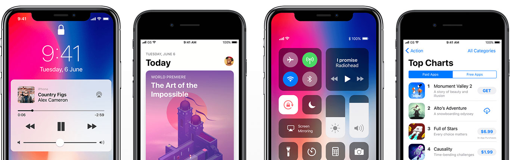
The redesign was embraced by fundraisers across the world while the new content creation tools facilitated significant shares and donations. The app was featured globally in the App Store, resulting in a 40% increase in new users and a 25% improvement on the average session time.
Donation results omitted for client confidentiality.
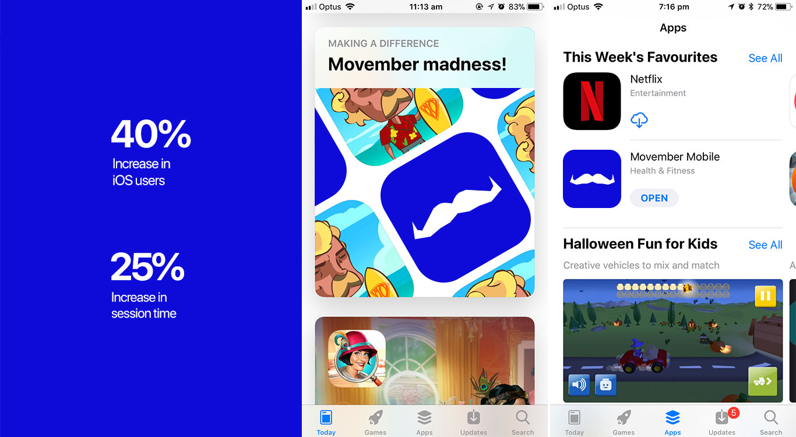
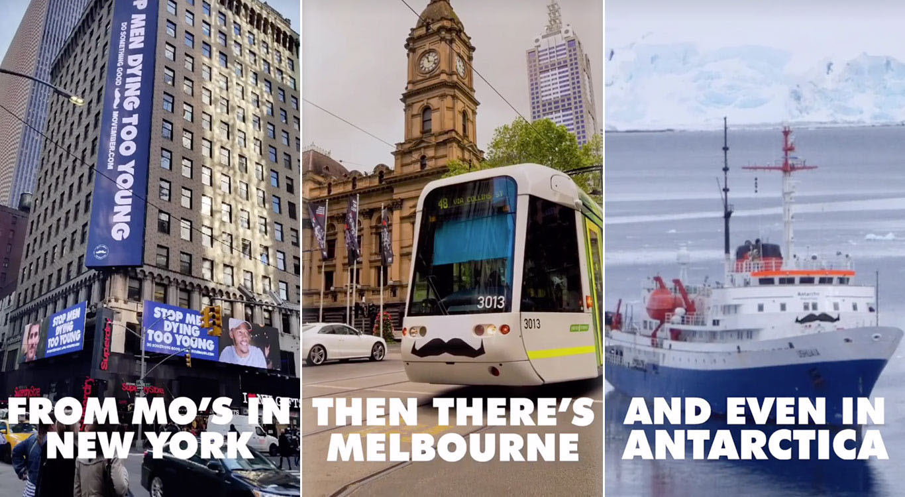
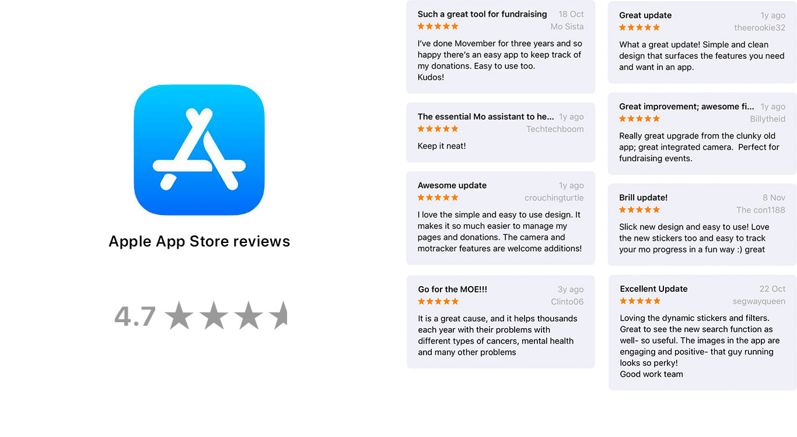
Feel free to reach out or check out some other work samples.